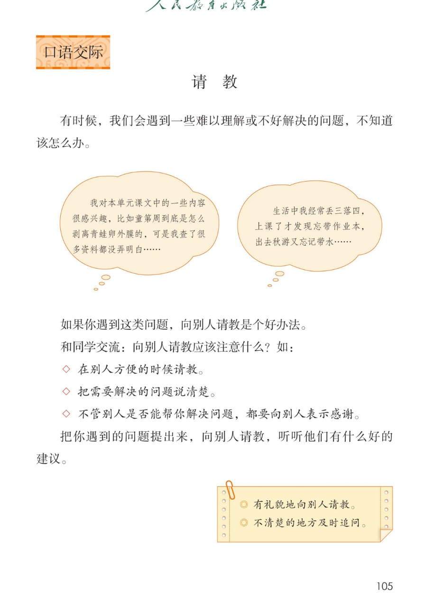

×
🔊 手机听不到声音怎么办？
① 先把手机
媒体音量调大 ，确认没开静音、没连蓝牙耳机；在微信里打开的，点右上角「⋯ → 用浏览器打开」。
② 还是没声音？到应用商店免费下载
Microsoft Edge 浏览器 （它自带朗读发声），用它打开本页面就能出声。
③ 换了 Edge 仍然没声音，说明这部手机的
硬件/系统不支持 网页朗读（多为老旧机型）；近几年买的新手机一般都能正常播放。
→ 打开声音自检
🙋 口语交际《请教》· 有声图文学习页
统编版语文 · 第八单元 · 课本 P105 · 素养升级版（对标 2022 课标第二学段）
板块内容 4 段
素养目标 4
重点词卡 4
听写词 12
近义词 4 组
深入理解 8 题
请教注意点 3 条
🎧 口语交际课这样学（可随时点任意一句、一个词单独听）： ① 听读板块内容 ——导语、情景气泡、请教注意点，逐句点读。② 学字词 ——重点词卡先读准，再听 4 组近义词辨析。③ 深入理解 ——8 道题，把请教的本领想清楚。④ 情景演练 ——分角色演一演：请教员、热心同学、小老师。🌟 小贴士（教材照录）：有礼貌地向别人请教；不清楚的地方及时追问。
📌 本单元语文要素——单元导语（P95 照录）：美好的品质，犹如温暖的阳光，带给我们希望和力量；阅读：学习带着问题默读，理解课文内容；习作：学写一件简单的事。
🀄 文化自信
🀄 文化自信
学做有礼貌的中国孩子：在别人方便的时候请教，得到帮助表示感谢。
🗣 语言运用
🗣 语言运用
遇到难以理解或不好解决的问题，能向别人请教：把问题说清楚，不清楚的地方及时追问。
💡 思维能力
💡 思维能力
分清什么时候该自己查资料、什么时候该请教别人，把问题想清楚再开口。
🎨 审美创造
🎨 审美创造
把问题讲得清楚、有礼貌，让别人愿意帮你、帮得上你。
点段前的 ①②③ 听整段
🔁 跟读模式：关
👁 隐藏注音（自测用）
词语卡上的拼音标的是易错音，读音供参考
🎤 口语交际要求（教材标准） 问题 提出来，向别人请教 ，听听他们有什么好的建议 ；在别人方便的时候 请教；说清楚 ；表示感谢 ；不清楚的地方及时追问 。
💡 请教小提示（五步走） 先自己想 ——实在解决不了再请教；第二步 挑时机 ——在别人方便的时候请教；第三步 说清楚 ——什么事、卡在哪里、想问什么；第四步 会追问 ——不清楚的地方及时追问；第五步 要道谢 ——不管帮没帮上，都表示感谢。
①
有时候，我们会遇到一些难以理解或不好解决的问题，不知道该怎么办。
📌 这一段讲：导语（照录）：有时候，我们会遇到一些难以理解或不好解决的问题，不知道该怎么办。
②
我对本单元课文中的一些内容很感兴趣，比如童第周到底是怎么剥青蛙卵外膜的，可是我查了很多资料都没弄明白……
生活中我经常丢三落四，上了课才发现忘带作业本，出去秋游又忘记带水……
📌 这一段讲：两个情景气泡（照录）：课文里的问题查资料没弄明白；生活中丢三落四的烦恼——都需要请教。
③
如果你遇到这类问题，向别人请教是个好办法。
和同学交流：向别人请教应该注意什么？如：
📌 这一段讲：交流任务（照录）：向别人请教是个好办法；和同学交流请教应该注意什么。
④
在别人方便的时候请教。
把需要解决的问题说清楚。
不管别人是否能帮你解决问题，都要向别人表示感谢。
把你遇到的问题提出来，向别人请教，听听他们有什么好的建议。
📌 这一段讲：请教三注意点与任务（照录）：在别人方便的时候请教；把问题说清楚；都要表示感谢；提出你的问题，听听好的建议。
🤔 想一想（点我可跳过）

第 105 页 · 口语交际 · 请教（含两个情景气泡与小贴士）
📖 人教版《语文》三年级上册 · 课本第 105 页 · 图片仅供个人学习，版权归人民教育出版社所有
点一张卡，听读音和词语（提示为通用规范，供参考）
点一行，听读这一组词语
请 请教 请问 请坐
追 追问 追赶 追求
谢 感谢 谢谢 谢意
解 解决 解开 理解
读两遍 → 你在纸上写 → 报答案 → 听示范句
准备听写 · 共 12 个词
○ ○ ○
点下面的「开始听写」，听到一个词就写一个词。
▶ 开始听写
🔁 再读一遍
👁 看答案
点词听读，点句子听示范句，再自己说一句
1 请教 重点词
示范句：遇到不懂的问题，可以向老师请教。
✏️ 我也能说：向谁请教什么。
2 问题 重点词
示范句：把需要解决的问题说清楚。
✏️ 我也能说：把什么说清楚。
3 解决 重点词
示范句：这个问题终于解决了。
✏️ 我也能说：什么解决了。
4 资料 重点词
示范句：我查了很多资料都没弄明白。
✏️ 我也能说：查了什么没弄明白。
5 明白 重点词
示范句：读完后要想办法弄清楚它们的意思。
✏️ 我也能说：要弄明白什么。
6 丢三落四 重点词
示范句：生活中我经常丢三落四。
✏️ 我也能说：谁经常丢三落四。
7 作业本 重点词
示范句：上了课才发现忘带作业本。
✏️ 我也能说：忘带了什么。
8 方便 重点词
示范句：在别人方便的时候请教。
✏️ 我也能说：在什么时候请教。
9 清楚 重点词
示范句：把需要解决的问题说清楚。
✏️ 我也能说：怎样说。
10 感谢 重点词
示范句：都要向别人表示感谢。
✏️ 我也能说：向谁表示感谢。
11 建议 重点词
示范句：听听他们有什么好的建议。
✏️ 我也能说：听什么。
12 追问 重点词
示范句：不清楚的地方要及时追问。
✏️ 我也能说：什么地方要追问。
相同点 / 不一样在哪 / 各造一句
请教 — 询问
相同：都表示向别人打听、求教。
不一样：请教 是恭恭敬敬地向有经验、有本领的人求教；询问 是一般的打听、问一问。
请教：遇到难题，我向老师请教。
明白 — 清楚
相同：都表示心里懂了、不糊涂。
不一样：明白 着重想通了、理解了；清楚 着重不模糊、有条理。
明白：查了很多资料，终于明白了其中的道理。
建议 — 意见
相同：都是别人给出的想法。
不一样：建议 是希望你怎么做的好主意，是帮你；意见 偏重看法，可能带批评。
建议：听听他们有什么好的建议。
感谢 — 感激
相同：都表示心里领别人的情。
不一样：感谢 是口头或行动上的谢意，程度较轻；感激 是深深的谢意，程度更重。
感谢：不管帮没帮上，都要向别人表示感谢。
请教三注意点 在别人方便的时候请教 把需要解决的问题说清楚 不管是否解决都要表示感谢
两个小贴士 有礼貌地向别人请教 不清楚的地方及时追问
可以请教谁 老师 爸爸妈妈 同学 有经验的叔叔阿姨
先自己再做这些 自己想一想 查一查资料 试一试 实在解决不了再请教
点一张卡，听读这一条
教材把三个注意点 和两个小贴士 都写在书上了——把它们记牢，再演一演，你就是请教小达人。
🕐 注意点一·挑时机
在别人方便的时候请教——下课铃响后、人家做完手头的事再开口；别人正忙时先等一等。🌈 说说你打算挑什么时候。
🗣 注意点二·说清楚
把需要解决的问题说清楚——先说发生了什么，再说卡在哪里，最后问想请教什么。问题清楚，帮忙才快。
🙏 注意点三·要道谢
不管别人是否能帮你解决问题，都要向别人表示感谢——谢的是心意和时间，不只是结果。
😊 小贴士一·有礼貌
有礼貌地向别人请教：先称呼，再用上请、您这些礼貌用语，语气亲切不生硬。
❓ 小贴士二·及时追问
不清楚的地方及时追问——没听懂就请他再讲一遍，或者换个问法：您能举个例子吗？别不好意思问。
🎭 情景演练
同桌演一演：一人当请教员，把一个真问题说清楚；一人当被请教的人，给出建议。演完互换角色。🌈 问题真实最好。
标「答案不唯一」的题，说得有道理都对
认知 教材中两个情景气泡各说了什么烦恼？（照录）看解析
🤔 想一想
解析：
一个说对本单元课文内容感兴趣，比如童第周到底是怎么剥青蛙卵外膜的，查了很多资料都没弄明白；另一个说生活中经常丢三落四，上课才发现忘带作业本，秋游又忘记带水。
🌈 答案不唯一，说得有道理都对
认知 教材小贴士的两条是什么？（照录）看解析
🤔 想一想
解析：
有礼貌地向别人请教；不清楚的地方及时追问。
🌈 答案不唯一，说得有道理都对
理解 向别人请教应该注意什么？把三个菱形提示完整说一说。（照录）看解析
🤔 想一想
解析：
在别人方便的时候请教；把需要解决的问题说清楚；不管别人是否能帮你解决问题，都要向别人表示感谢。
🌈 答案不唯一，说得有道理都对
理解 请教前，为什么最好先自己想一想、查一查？看解析
🤔 想一想
解析：
有些问题自己动手就能解决，还能练本领；实在解决不了的再去请教，既不麻烦别人，请教时也能把问题说得更明白——气泡里的同学就是先查了很多资料。🌈 说出自己的理解就好。
🌈 答案不唯一，说得有道理都对
理解 怎样才算“把需要解决的问题说清楚”？看解析
🤔 想一想
解析：
说清楚三件事：发生了什么事、自己卡在哪里、想请对方帮什么忙——比如：我想弄明白童第周怎么剥青蛙卵外膜，查了资料还是不懂，您能讲讲吗？
🌈 答案不唯一，说得有道理都对
运用 结合教材情景，演一演“请教”：把你的一个真问题向同学请教。看解析
🤔 想一想
解析：
示范：我想请教您一个问题——我经常丢三落四，上了课才发现忘带作业本，请问有什么好办法能记住带齐东西吗？谢谢您！🌈 问题真实、说法清楚、有礼貌就合格。
🌈 答案不唯一，说得有道理都对
运用 “不清楚的地方及时追问”——如果对方讲的你还是没听懂，你会怎么追问？看解析
🤔 想一想
解析：
可以请他再讲一遍，可以请他举个例子，也可以换个问法：您能说慢一点吗？这里我还是不太明白。追问不是打断，是把问题弄懂的最好办法。🌈 追问的话术说得自然就好。
🌈 答案不唯一，说得有道理都对
拓展 除了向人请教，还有什么办法能解决“难以理解或不好解决的问题”？看解析
🤔 想一想
解析：
🌈 答案不唯一：查资料、看书、上网查、动手试一试、和小组同学一起讨论……先自己想办法、再请教别人，本领就是这样一点点练出来的。
🌈 答案不唯一，说得有道理都对
💬 请教支架：先 想清楚问题 → 再 挑别人方便的时候 → 接着 把问题说清楚 → 然后 认真听、及时追问 → 最后 表示感谢。
点一个角色，听他（她）说的话
🎭 请教员
老师，我对本单元课文中的一些内容很感兴趣，比如童第周到底是怎么剥青蛙卵外膜的，可是我查了很多资料都没弄明白……您能给我讲讲吗？
💬 要读得有礼貌、真诚 ，像真的在向别人请教
🎭 热心同学
这个问题我正好知道！童第周是把青蛙卵的外膜剥掉的……我先说说我知道的，不清楚的我们一起再查资料。
💬 要读得有礼貌、真诚 ，像真的在向别人请教
🎭 小老师
请教小窍门：先挑别人方便的时候；再把问题说清楚——什么事、卡在哪里、想问什么；听的时候认真听、及时追问；最后别忘了道谢。
💬 要读得有礼貌、真诚 ，像真的在向别人请教
🎭 被请教的人
你问得很清楚，我很乐意帮你。这个问题的解决办法是……如果你还想再弄明白，课后我们再一起看资料。
💬 要读得有礼貌、真诚 ，像真的在向别人请教
🎭 旁白
有时候，我们会遇到一些难以理解或不好解决的问题，不知道该怎么办——别急，向别人请教是个好办法。
💬 要读得有礼貌、真诚 ，像真的在向别人请教
每题给自己打 1~3 颗星
1. 我能读准重点词，说出请教时要注意什么。 ☆ ☆ ☆
2. 我能把遇到的问题说清楚（什么事、卡在哪里、想问什么）。 ☆ ☆ ☆
3. 我会在别人方便的时候请教，不清楚的地方及时追问。 ☆ ☆ ☆
4. 我不管别人是否帮上忙，都会表示感谢。 ☆ ☆ ☆
5. 我能把一个真实的问题向同学请教成功。 ☆ ☆ ☆
✍️ 行动任务 （教材原话）：把你遇到的问题 提出来，向别人请教 ，听听他们有什么好的建议 。写下你的问题 （课文里的、生活中的都可以）；第二步，挑别人方便的时候，有礼貌地请教 ；第三步，不清楚的地方及时追问 ，最后表示感谢 。